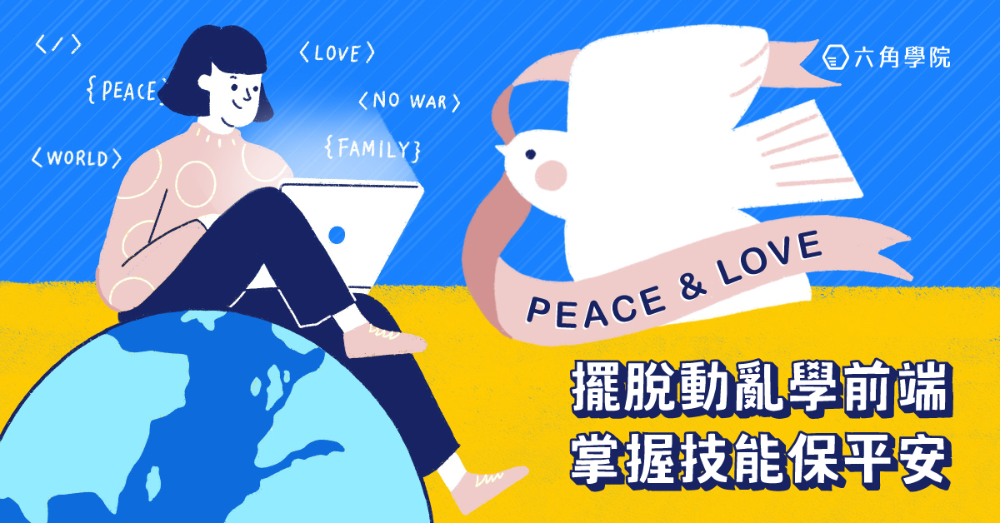
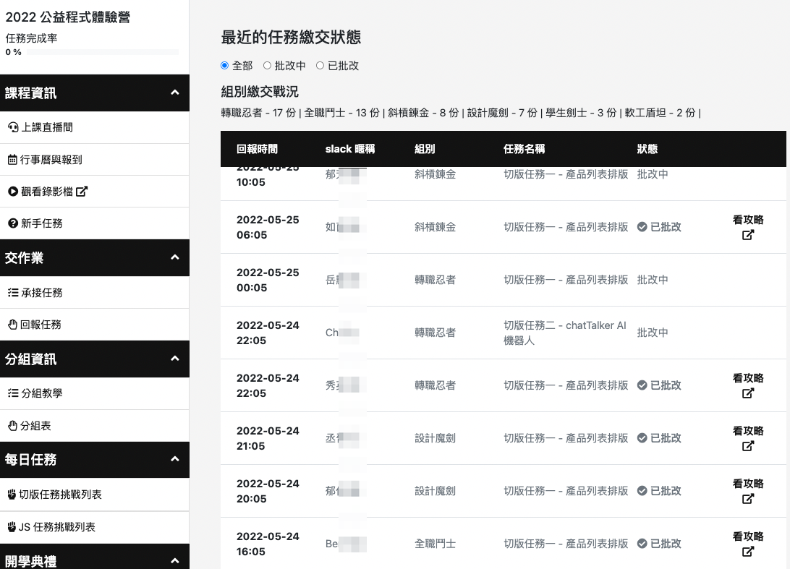
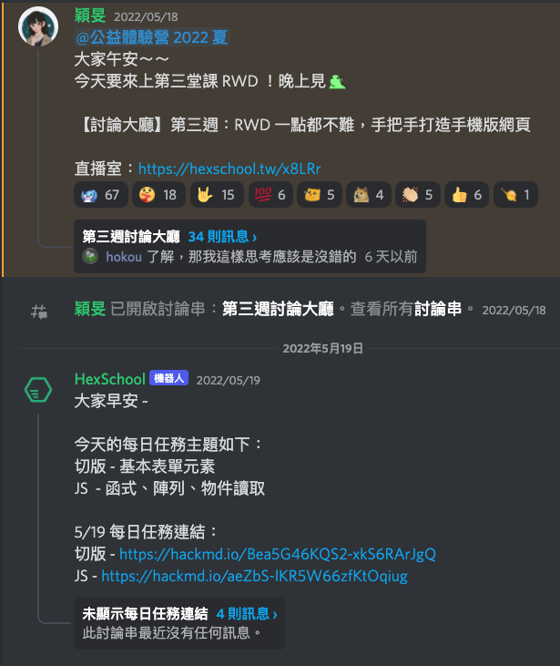
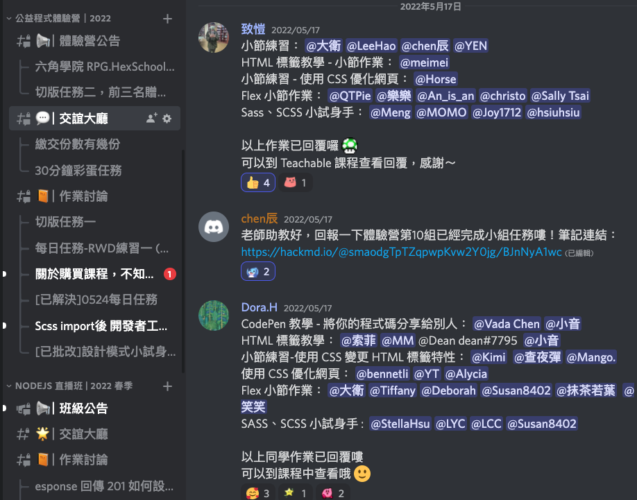
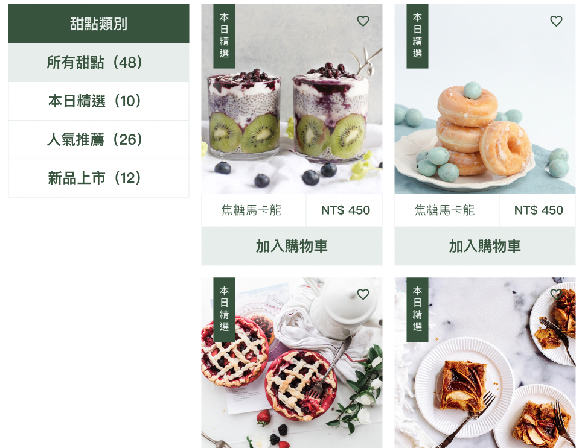
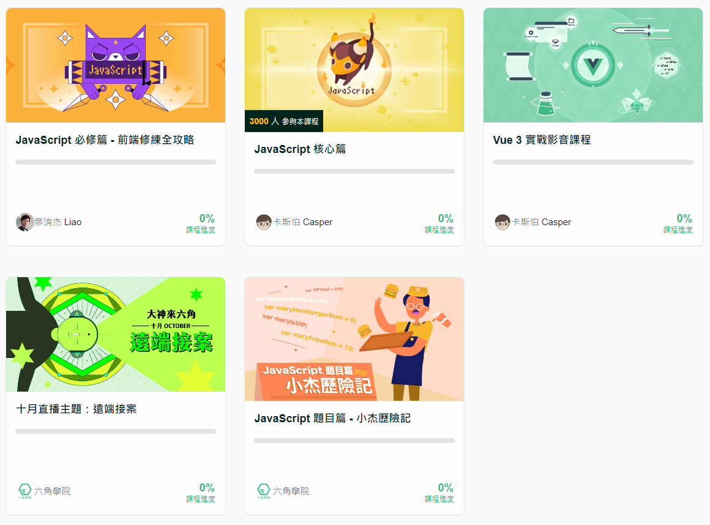

[心得]六角學院 2022 公益程式體驗營
前言
很幸運地在報名開始前看到這個體驗營的資訊，沒想到報名的時間限制在一天 24 小時之內，超怕沒能順利報名，所以在 4/20 當天中午馬上進入報名頁準備報名，我個人是很順利地報名成功，但跟我一起報名的朋友們被系統卡住了。好險六角學院很快就解決了系統的問題，在下午一點之前我的朋友們也都報名成功。
體驗營各種時程規劃
報名時間： 4/20(三) 中午 12:00 ~ 4/21(四) 23:59:59
直播教學開始時間：5/3(二)~6/1(三)
作業繳交與發問服務期限：6/12(日)
統一提供完課證書：6/24(五)
影音觀看期限：享有永久觀看影片權！
程式勇者村
六角學院自己製作的課程系統，可以在裡面提交證書任務，老師/助教會幫忙批改，也可以查看別人提交的任務，互相學習進步。
體驗營 Discord 頻道
 加入體驗營的 Discord，可以在上面提出問題，老師/助教/同學大多都很熱心回答。洧杰老師還在每週一至週五提供每日切版任務、每日 JS 題目練習。助教在批改完作業後也會在 Discord tag 學員已批改，讓學員到系統查看批改結果。
證書任務一、商品列表切版
第一個切版任務是甜點的商品列表，這個作業還有個前五名完成的彩蛋獎品，我試了但可惜沒有成功，哈哈。實作實真的會遇到很多困難，自從這次切版完，我體會到從做中學的真諦。
證書任務二、Chat Talker 切版

第二個切版任務是一個線上聊天機器人方案的網站，這個作業共有兩個頁面，要上傳到 GitHub Pages，當作實際網站來製作。這個任務作業又比第一個切版任務困難，我拖拖拉拉很久，在課程最後一次直播結束都還沒完成。努力趕工趕工，好險在任務繳交期限前完成提交，希望後續能順利通關拿到證書。
後續
體驗營最後，六角學院提供多個折扣優惠的購買方案，我考慮之後買了 JS/Vue 影音課程套餐(加送遠端接案&小杰歷險記)，繼續學習，未來規劃是成為高階前端工程師，加油！